NET 5
Concept and choreography by Daniela Georgieva.
Five bodies test what it means to move together. NET 5 turns touch, distance, and shared rhythm into a changing architecture—asking how connection is built, held, and released.
01
Body as structure
Five dancers explore how separate bodies encounter space and gradually form one collective presence.
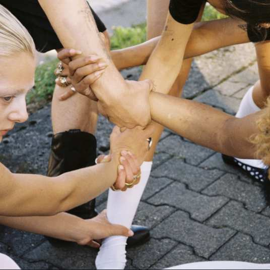
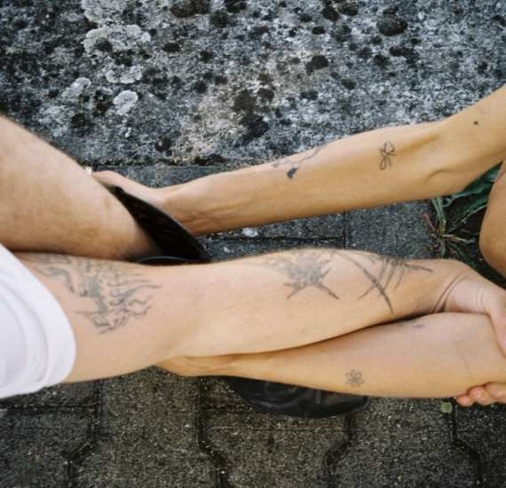
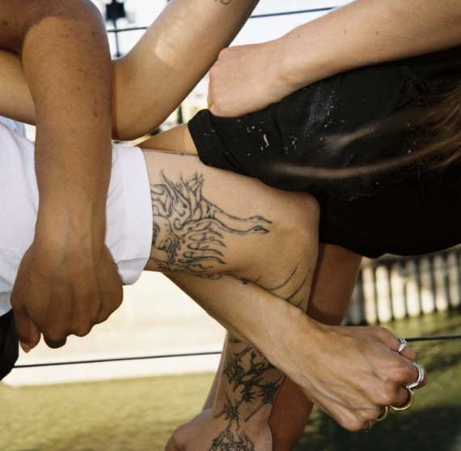
02
Live at Weltkunstzimmer
Düsseldorf, 2025
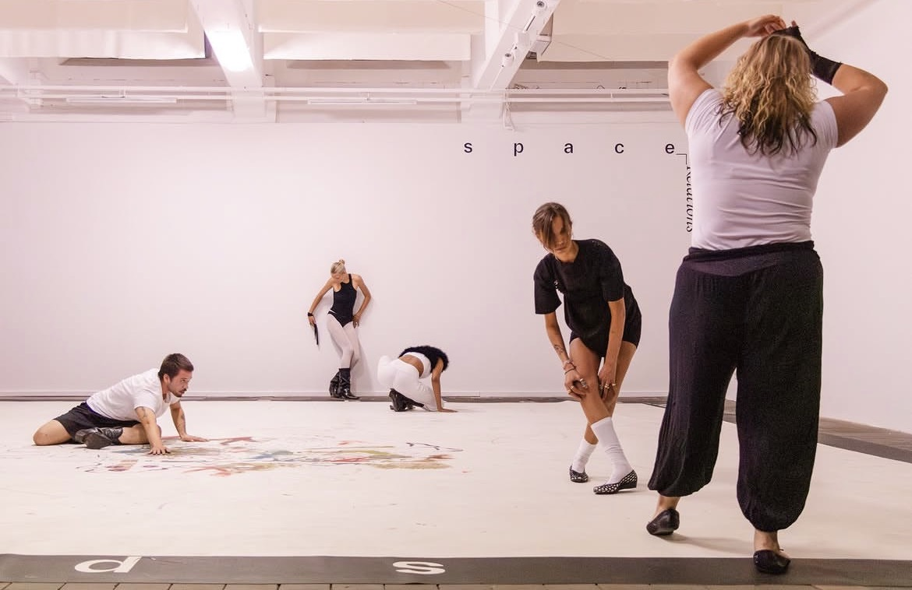
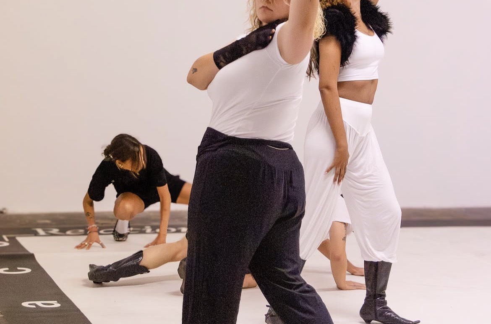
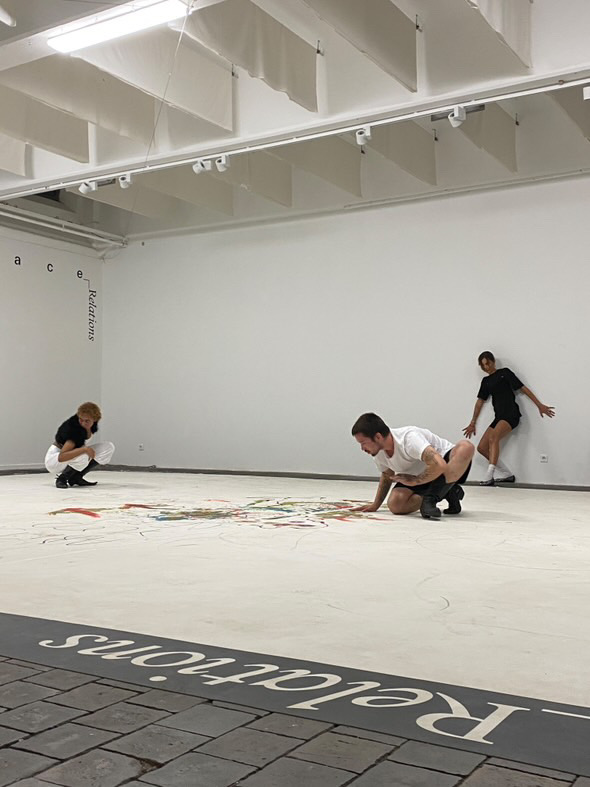
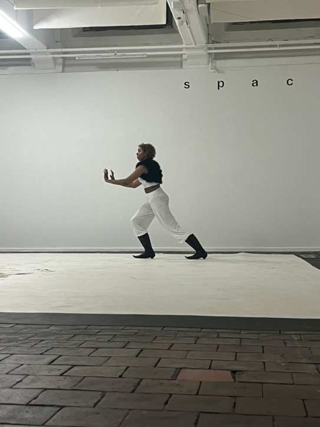
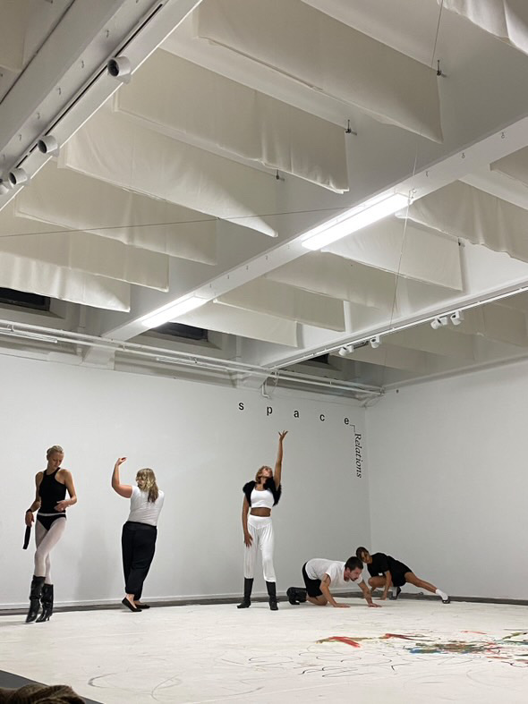
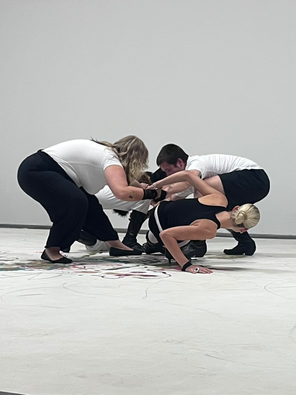
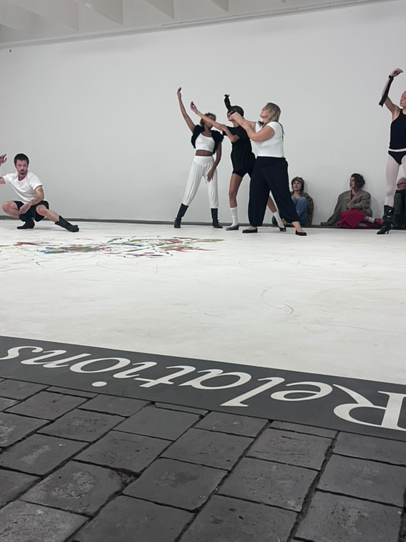
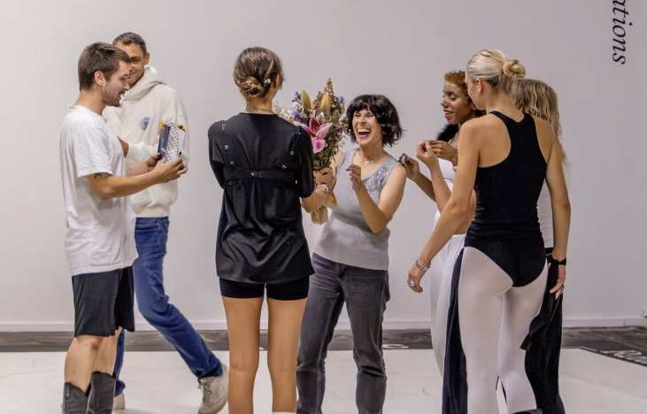
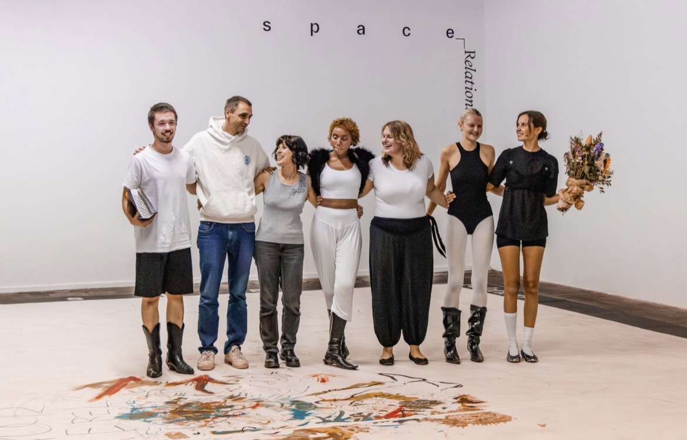
03
The film
Selected frames from the 12-minute performance film.


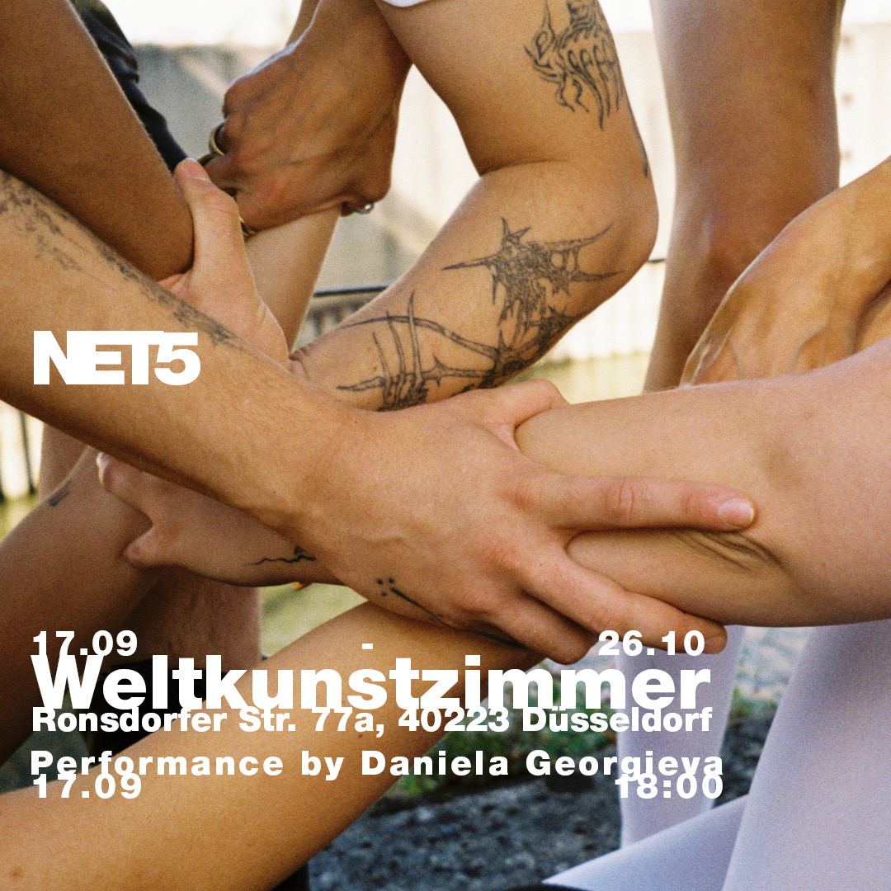
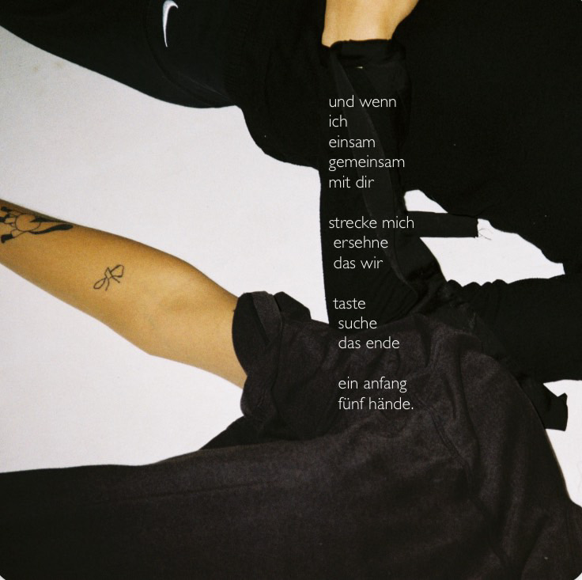